BORRADOR PARA REVISIÓN DE RICHARD · CIFRAS PROPUESTAS, NO DEFINITIVAS
Propuesta de franquicia · Colombia
Tumbite Bogotá: la franquicia de toda la ciudad
Una app de domicilios completa, ya construida y funcionando, para lanzarla en Bogotá con
un socio local. Este documento explica cuánto cuesta, cómo se lanza, cómo te apoyamos,
cuánto deja y cómo se recupera el capital.
2,71 millones de USDinversión total: franquicia y lanzamiento de 6 meses
mes 31capital recuperado en el escenario base
75 % / 25 %del margen de cada pedido: franquiciado / Tumbite
10 añosexclusividad en toda Bogotá, renovables
Preparado por Windoce LLC para el Dr. Niño y sus socios · 18 de octubre de 2026 · Cifras
en dólares a la tasa del 16 de octubre de 2026: 3.170,46 pesos por dólar.
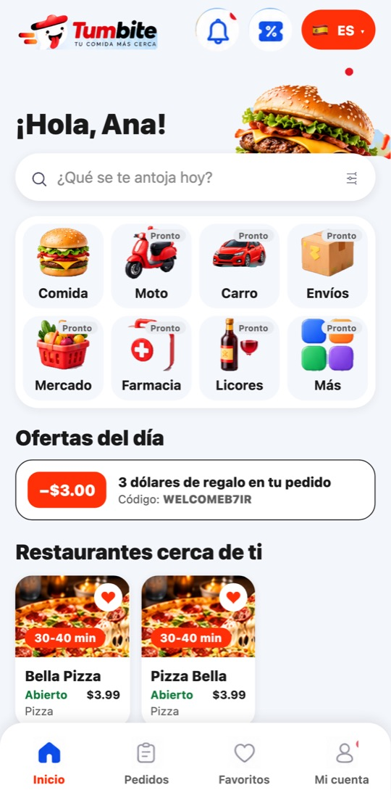
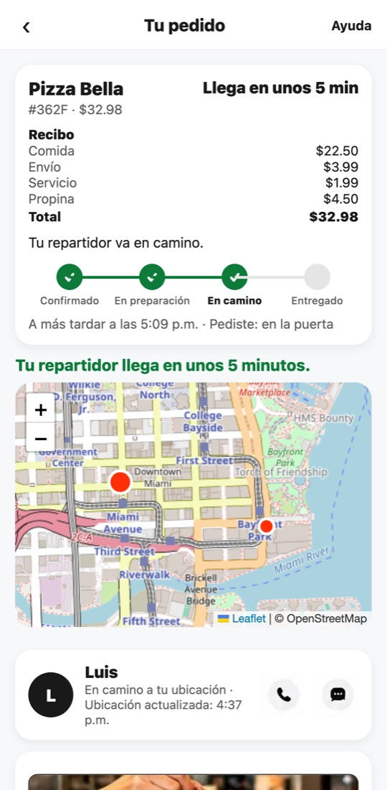
Resumen
La propuesta en una página
Bogotá mueve millones de domicilios al mes y la comisión que cobran las apps a los
restaurantes ronda el 27 %. Tumbite entra cobrando cerca de la mitad, con una app que ya
funciona de punta a punta y un socio local que conoce la ciudad.
Cuota de franquicia (una vez)
120.000 USD
toda Bogotá, con exclusividad
Capital del lanzamiento (6 meses)
2,59 M USD
8.201 M COP, con 10 % de reserva
Utilidad del franquiciado, año 3 (base)
2.314.463 USD
después de equipo y publicidad
Capital recuperado (base)
mes 31
conservador: mes 42 · optimista: mes 25
Qué compras
La marca Tumbite y la exclusividad de toda Bogotá por 10 años.
Tres apps listas (cliente, restaurante, repartidor) y los paneles web.
El plan de lanzamiento en frío y el acompañamiento de nuestro equipo.
Las actualizaciones de la tecnología, sin costo extra.
Qué pone el socio local
La empresa en Colombia (S.A.S.) y su cuenta con la pasarela de pagos.
El capital del lanzamiento y el equipo de la ciudad.
La afiliación de restaurantes y repartidores, y la atención local.
El cumplimiento de las normas colombianas.
Cómo se reparte
75 % franquiciado
25 %
De lo que deja cada pedido (comisión del restaurante y tarifa de servicio, menos la
pasarela de pagos, los aportes del repartidor y el soporte), el 75 % es del franquiciado
y el 25 % de Tumbite. El envío y la propina son del repartidor, completos.
Tumbite Bogotá · Propuesta de franquiciaLas proyecciones no son promesas: dependen de la ejecución y del mercado.
El mercado
Bogotá pide a domicilio, y paga caro por hacerlo
Todos los datos salen de fuentes públicas (la lista está al final). Donde no hay cifra
pública, se dice que es una estimación nuestra.
9 millones
de órdenes al mes de Rappi en Colombia (mayo 2026), con más de 19.000 restaurantes
25 % + 2 %
comisión que Rappi publica para restaurantes en Colombia, más IVA; en la práctica 27 a
32 %
+18,1 %
crecieron los domicilios de restaurantes en el primer semestre de 2026, más que el canal
total
64 % / 18 %
usuarios activos de Rappi y de DiDi Food: un mercado de dos, con espacio para un tercero
Lo que dicen los números
Estimamos que Bogotá mueve entre 4 y 5 millones de domicilios al mes, con un ticket
medio de 30.000 a 40.000 pesos.
DiDi Food llegó con descuentos fuertes y en cinco años suma 15.000 restaurantes y 9
millones de usuarios: entrar es posible.
Uber Eats (2020) e iFood (2022) salieron del país: el error fue competir solo con
dinero y sin socio local.
El efectivo sigue pesando: bajó al 65 % del valor de las compras habituales en 2026.
Tumbite ya acepta pago en efectivo y transferencia al repartidor.
Por qué Tumbite gana restaurantes
Concepto
Rappi
Tumbite
Comisión al restaurante
25 % + 2 %
15 %
Primeros 3 meses de los primeros restaurantes
comisión normal
0 %
Tablet para recibir pedidos
la pone el local
incluida
Menú y fotos cargados por nosotros
no
sí
Restaurante con 100.000.000 COP al mes en apps
≈ 73 M le quedan
≈ 85 M le quedan
Ejemplo calculado con las comisiones publicadas, sin IVA. La comisión exacta por plan la
decide la franquicia con Tumbite.
Fuentes: Prensa Mercosur, Semana, El Tiempo, Sensor Tower, Valora Analitik, Rappi
Merchants, Infobae (lista completa al final)2
El producto, ya construido
La app del cliente: capturas reales, no maquetas
Estas pantallas son de la app que ya funciona hoy (versión de Miami, por eso los precios
salen en dólares). Para Bogotá se configuran la moneda, las zonas y los métodos de pago.
Inicio con servicios y restaurantes
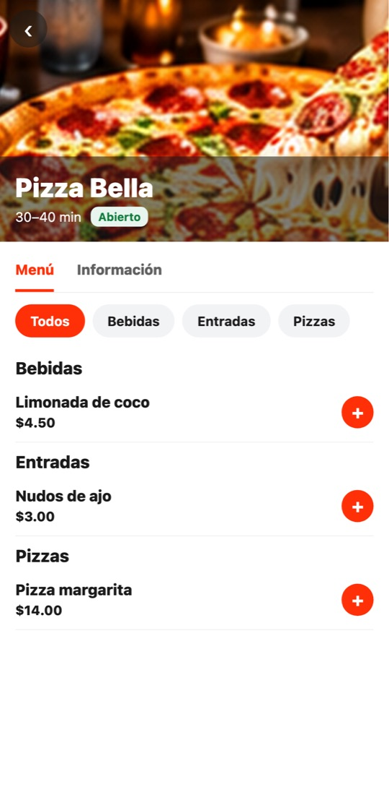
Menú del restaurante
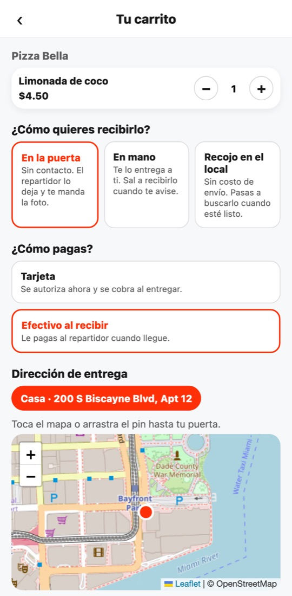
Carrito: tarjeta o efectivo al recibirPedido en vivo en el mapa
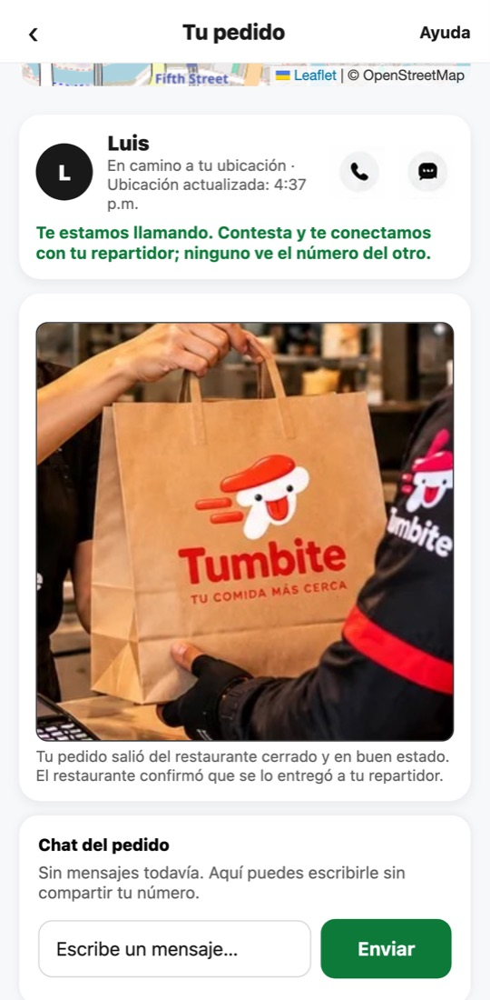
Pedido sellado con foto
Capturas originales del recorrido automático de la app (18 oct 2026)3
El producto, ya construido
Repartidores y restaurantes, con su propia app
El repartidor ve cuánto gana antes de aceptar y lleva su saldo; el restaurante recibe el
pedido con alarma y ve su dinero del día. Todo en español y en inglés.
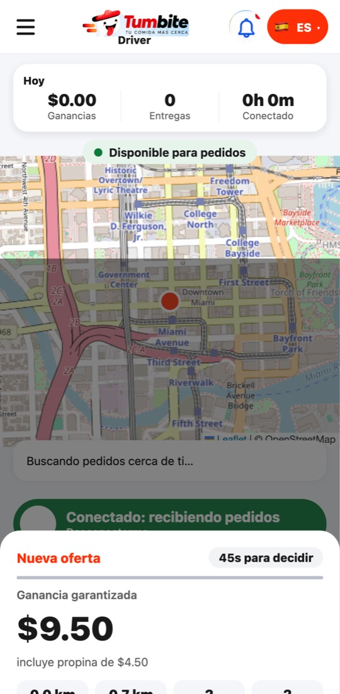
Oferta con el pago antes de aceptar
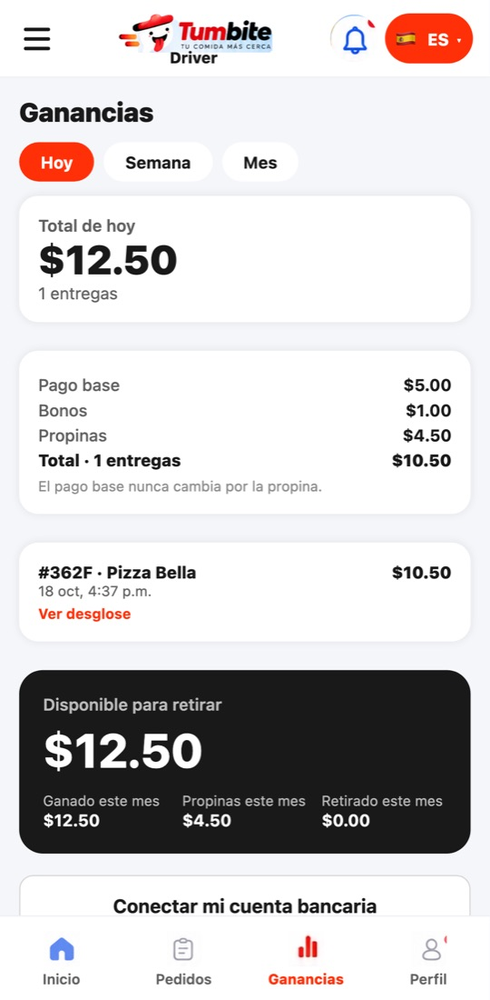
Ganancias del día con desglose
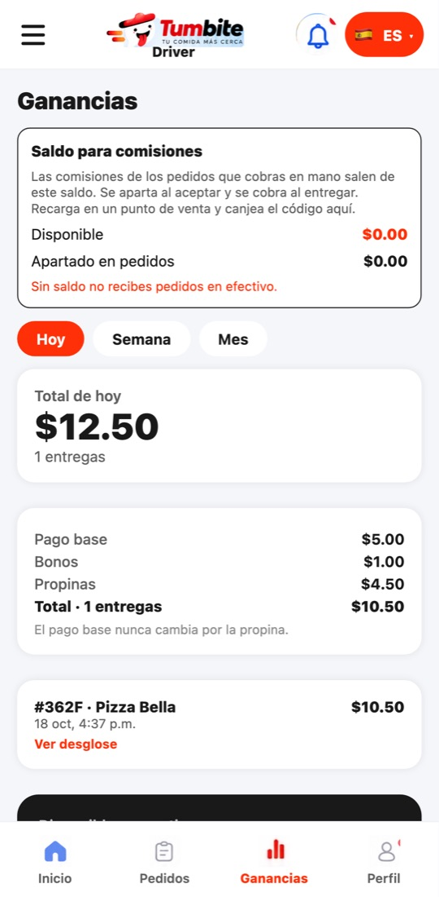
Saldo para pedidos en efectivo
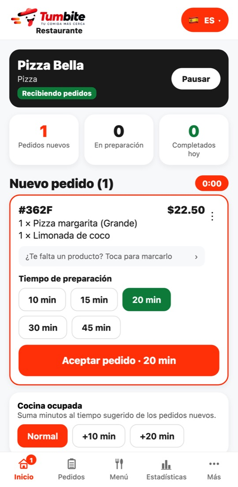
Pedido nuevo en la app del restaurante
Capturas originales del recorrido automático de la app (18 oct 2026)4
El producto, ya construido
El panel del restaurante y el de la franquicia
El restaurante maneja su menú, sus pedidos, sus reseñas y su dinero desde la computadora. La
franquicia tiene su propio panel con los números de su territorio, y nuestro equipo vigila
cada pedido.
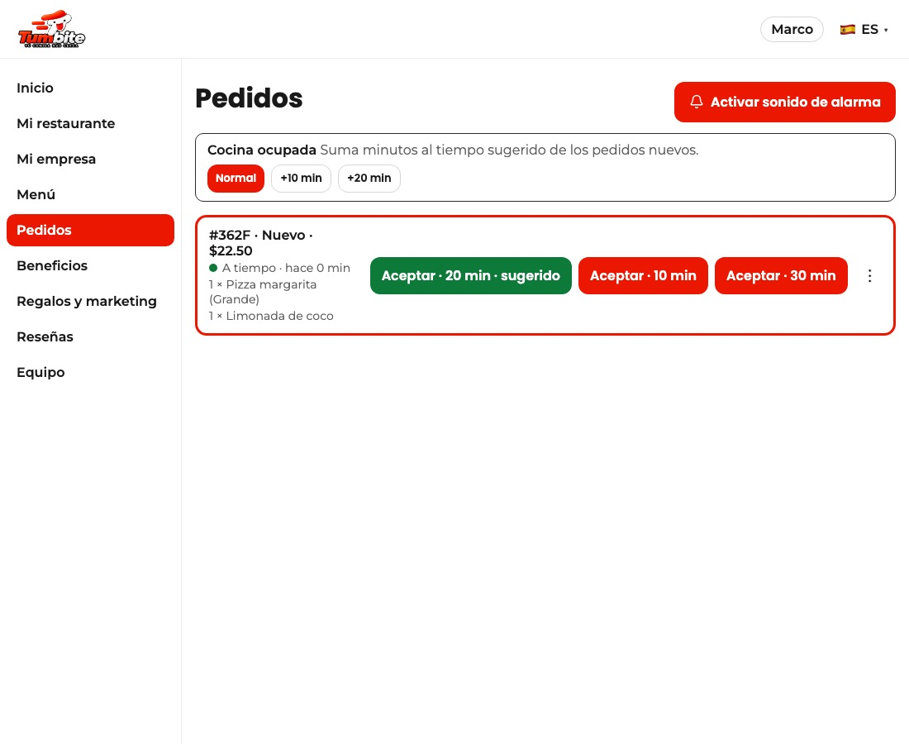
Pedido nuevo en el panel del restaurante, con el tiempo para aceptar.
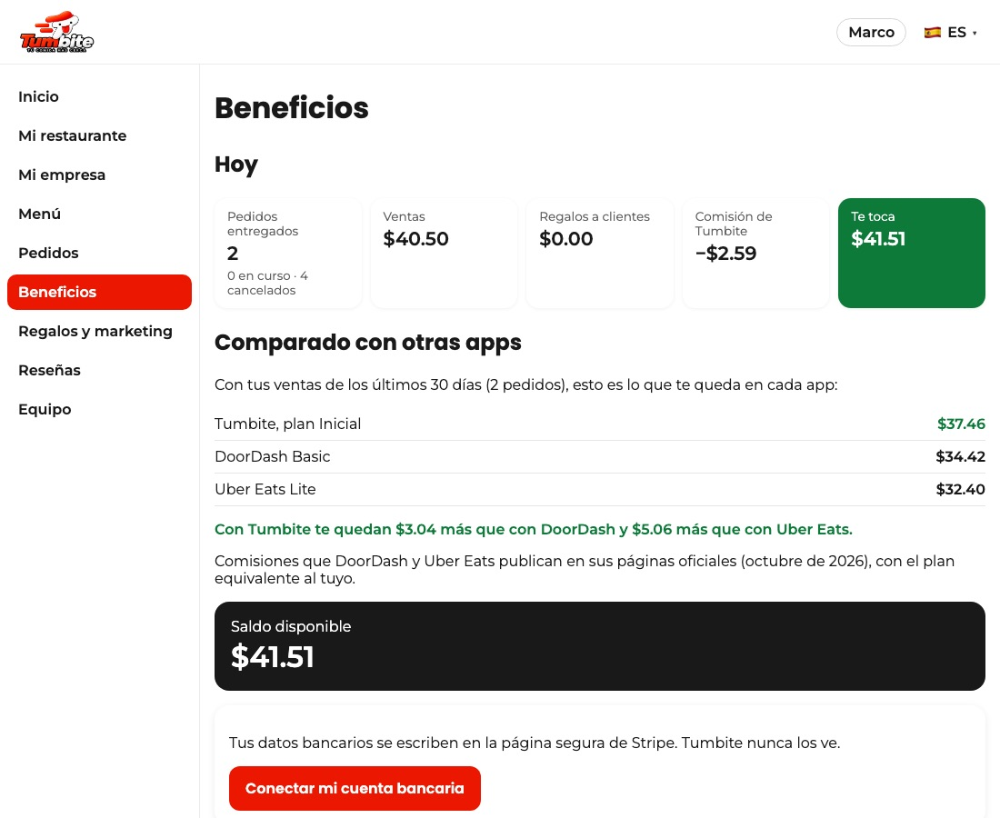
Lo que le queda al restaurante, comparado con otras apps.
Capturas originales del recorrido automático de la app (18 oct 2026)5
Lo que aprendimos de Yango
Cómo entró Yango a Bogotá, y qué tomamos
Yango (del grupo Yandex) llegó a Bogotá en febrero de 2025 después de 16 meses en otras
cinco ciudades. Anunció 300 millones de dólares a cuatro años y gastó unos 600.000 dólares
por semana en publicidad, sobre todo en TikTok. No hace comida a domicilio en Colombia
todavía.
Lo que hicieron
Entraron con la oferta ya armada: se aliaron con Taxis Libres y tuvieron más de 25.000
taxis desde el primer día.
Dos campañas separadas: 80 % de descuento en el primer viaje para el usuario, y cuatro
meses sin comisión más bonos diarios para el conductor.
Gasto digital constante, creadores con código propio y el gerente país en todos los
medios económicos.
Un precio fácil de comprobar: «15 % más barato», sin tarifa dinámica.
Alianzas donde el comercio paga parte del descuento (centro comercial Nuestro Bogotá).
Un informe público de seguridad con cifras.
Lo que hace Tumbite en Bogotá
Oferta antes del día uno: 300 restaurantes con menú cargado y 800 repartidores
aprobados antes de abrir; alianza con una cadena o una asociación de domiciliarios.
Repartidor: garantía de ingresos las primeras tres semanas y su kit (chaqueta y
maleta) sin costo.
Cliente: primer pedido con descuento grande y referidos que ganan los dos.
Restaurante: 0 % de comisión tres meses y después la mitad de lo que cobra la
competencia.
Precio claro: tarifas publicadas y comparador en la web.
Sin quemar dinero: abrimos por zonas y el capital se libera por metas, no de
golpe.
Fuentes: El Colombiano (10 oct 2024), Publimetro (5 feb y 6 mar 2025), Autocosmos (27 feb
2025), ENTER.CO (21 abr 2026), Portafolio (18 oct 2026). Investigación con fuentes públicas
solamente.
Tumbite Bogotá · Propuesta de franquicia6
Lanzamiento en frío
De cero a toda Bogotá en nueve meses
Una app de domicilios necesita tres cosas a la vez: restaurantes, repartidores y clientes.
Por eso se abre por zonas, y cada zona abre solo cuando tiene oferta suficiente.
Meses 1 a 3 Antes de abrir
Empresa, pasarela de pagos y oficina.
Gerente de ciudad y equipo de 9 personas, entrenados con nuestras guías.
300 restaurantes firmados, con menú y fotos cargados y su tablet.
800 repartidores aprobados y uniformados.
Lista de espera de clientes y alianzas.
Mes 4 Apertura por zonas
Chapinero, Usaquén, Teusaquillo y Cedritos primero: alta densidad y ticket alto.
Vallas en la 7.ª, la Autonorte y la 26; estaciones de TransMilenio.
Campaña de primer pedido y creadores de Bogotá.
Brigadas en universidades y centros comerciales.
Meses 5 y 6 Expansión
Suba, Engativá, Fontibón y Salitre.
Radio y Citytv en el horario de la cena.
Referidos y alianzas con cadenas.
Meta: 1.000 restaurantes y 1.500 repartidores.
Meses 7 a 9 Toda la ciudad
Kennedy, Bosa, Américas y el sur.
La publicidad pasa a un gasto mensual estable.
Se activan más servicios de la app (mercado, farmacia) cuando la ciudad lo pida.
Meta: 2 % de los domicilios de Bogotá al cerrar el año.
Compuertas: el capital sale por metas
El dinero del lanzamiento no se gasta de golpe. Se libera en tres partes: 40 % para
la preparación (meses 1 a 3), 35 % al abrir, si hay 300 restaurantes y 800
repartidores listos, y 25 % en el mes 6, si se cumplen las metas de pedidos de la
primera zona. Si una meta no se cumple, se corrige antes de gastar más.
Tumbite Bogotá · Propuesta de franquicia7
Cómo te apoyamos
Lo que hace Tumbite y lo que hace el socio local
La franquicia no es solo una marca: es una operación completa con la tecnología, el método y
el acompañamiento de nuestro equipo.
Tumbite pone
Las tres apps (cliente, restaurante, repartidor) en las tiendas, y los paneles web,
con sus servidores y su mantenimiento.
El panel de la franquicia: pedidos, ventas, restaurantes, repartidores e incidencias
de Bogotá.
La vigilancia de cada pedido, los avisos automáticos y el soporte técnico.
El manual del lanzamiento en frío y las guías de capacitación por puesto, en español.
La campaña creativa: piezas de vallas, redes, radio y uniformes con la marca.
Dos semanas de acompañamiento presencial en la apertura y una reunión semanal de
números.
La conexión técnica con la pasarela de pagos de Colombia que contrate la franquicia.
Las mejoras de la app para todas las ciudades, sin costo extra.
El socio local pone
La S.A.S. en Colombia, su RUT, su cuenta bancaria y el contrato con la pasarela (Wompi
u otra).
El capital del lanzamiento y del primer año.
El equipo de la ciudad: gerente, comerciales, soporte, flota y redes.
La firma de restaurantes y el reclutamiento de repartidores.
La compra de la publicidad en Bogotá, con las piezas que le entregamos.
Los aportes de seguridad social de los repartidores que exige la Ley 2466 de 2025.
Contador y abogado locales, y la atención a las autoridades.
Tumbite Bogotá · Propuesta de franquicia8
La inversión
Lo que cuesta lanzar en toda Bogotá, sin exagerar
Cotizamos un lanzamiento con vallas, TransMilenio, radio, televisión local, redes y calle.
Es el necesario para que toda Bogotá conozca Tumbite, no el máximo posible.
Rubro (primeros 6 meses)
Pesos
Dólares
Publicidad exterior (10 vallas, 12 estaciones de TransMilenio, 15 buses, 4 pantallas
LED, 40 mupis)
1.000 M COP
315.412 USD
Radio, Citytv y prensa
480 M COP
151.398 USD
Digital (200.000 instalaciones, creadores de Bogotá, piezas)
1.300 M COP
410.035 USD
Activaciones (brigadas, volantes, universidades y centros comerciales, uniformes)
760 M COP
239.713 USD
Kit de 1.500 repartidores (chaqueta, maleta térmica)
450 M COP
141.935 USD
Flota propia de 50 motos de respaldo
375 M COP
118.279 USD
Tablets para 1.000 restaurantes
450 M COP
141.935 USD
Incentivos: garantía a 1.200 repartidores (3 semanas)
720 M COP
227.096 USD
Incentivos: primer pedido de 100.000 clientes
1.000 M COP
315.412 USD
Incentivos: referidos (25.000)
500 M COP
157.706 USD
Empresa y equipo de lanzamiento (6 meses)
420 M COP
132.473 USD
Reserva de imprevistos (10 %)
746 M COP
235.297 USD
Capital del lanzamiento
8.201 M COP
2.586.691 USD
Cuota de franquicia (toda Bogotá, 10 años)
380 M COP
120.000 USD
Inversión total
8.581 M COP
2.706.691 USD
Tres tamaños de lanzamiento
Escenario
6 meses
Sobrio: redes y calle, poca valla
1,4 M USD
Este plan: toda Bogotá, por zonas
2,59 M USD
Fuerte: ciudad cubierta de vallas
5,2 M USD
Por todo lo alto: TV nacional y celebridades
13 M USD
Como referencia, Yango gastó unos 600.000 dólares por semana en publicidad en
Colombia.
De dónde salen los precios
Vallas: de 8 a 50 millones de pesos al mes (Las2orillas, feb 2026). TransMilenio:
318.960 pesos por metro cuadrado al mes (tarifa oficial 2025). Radio y TV: tarifarios
de RCN y Caracol. Instalaciones: 1,2 a 2,5 dólares por app instalada. Salarios:
portales de empleo de 2026. Las piezas sin tarifa pública son estimaciones y se
confirman al cotizar.
Detalle en el estudio de costos de lanzamiento en Bogotá9
Cuánto deja cada pedido
Un pedido típico de 35.000 pesos
El cliente paga la comida, el envío, la tarifa de servicio y la propina. El repartidor se
lleva el envío y la propina completos. La plataforma vive de la comisión y la tarifa de
servicio.
Concepto
Pesos
Comisión del restaurante (15 % de 35.000)
5.250
Tarifa de servicio al cliente (5 %)
1.750
Ingreso de la plataforma
7.000
Pasarela de pagos (mitad de los pedidos con tarjeta)
−1.067
Aportes de seguridad social del repartidor (Ley 2466)
−334
Completar el mínimo del repartidor y soporte
−650
Margen por pedido
4.949
Franquiciado (75 %)
3.712
Tumbite (25 %)
1.237
Por qué 75 % y 25 %
El franquiciado carga con lo más pesado de la operación diaria: el equipo, la
publicidad, los repartidores y la atención en Bogotá. Por eso se queda con tres de cada
cuatro pesos del margen.
Tumbite cubre con su 25 % la tecnología, los servidores, las tiendas de apps, la
vigilancia de los pedidos, las mejoras continuas y el soporte. En las franquicias
maestras del mundo el reparto suele ser 50 y 50; aquí es más favorable para el socio
local porque la tecnología ya está hecha.
No hay regalías sobre las ventas de los restaurantes ni cuota mensual fija: Tumbite gana
solo cuando la franquicia gana.
Ingresos extra que no están en estas cuentas: restaurantes destacados en la app, una
membresía con envío gratis y otros servicios (mercado, farmacia, envíos).
Supuestos: ticket de 35.000 pesos, envío de 4.500, Wompi 2,65 % + 700 pesos + IVA, 50 %
de pagos con tarjeta10
Proyección
Utilidad anual del franquiciado y retorno del capital
Utilidad del franquiciado después de su equipo y su publicidad mensual, sin contar el
capital del lanzamiento (que es la inversión que se recupera). Tres escenarios: el base
supone 2 % de los domicilios de Bogotá al año, 4,5 % al segundo y 6 % al tercero.
Escenario
Año 1
Año 2
Año 3
Año 4
Recupera
Conservador
112.424 USD
569.485 USD
1.239.738 USD
1.947.792 USD
mes 42
Base
339.039 USD
1.275.854 USD
2.314.463 USD
3.325.970 USD
mes 31
Optimista
603.423 USD
2.099.951 USD
3.568.310 USD
4.933.843 USD
mes 25
Pedidos al año
Escenario
Año 1
Año 2
Año 3
Año 4
Conservador
485.520
1.407.840
2.142.000
2.746.800
Base
693.600
2.011.200
3.060.000
3.924.000
Optimista
936.360
2.715.120
4.131.000
5.297.400
Lo que recibe Tumbite (25 %)
Escenario
Año 1
Año 2
Año 3
Año 4
Base
251.794 USD
784.854 USD
1.194.139 USD
1.531.308 USD
Caja acumulada del franquiciado, escenario base
Empieza en menos la inversión total y sube con la utilidad de cada mes. En el escenario
base, en el mes 31 vuelve todo el capital; desde ahí todo es utilidad.
Utilidad al mes 24 (base)
162.984 USD
Utilidad al mes 36 (base)
231.506 USD
Modelo con supuestos escritos; se actualiza con los datos reales de cada mes11
Socios y capital
Cómo entran los socios y cómo se recupera el capital
Los inversionistas son dueños de la franquicia. Tumbite no les pide acciones: gana con su 25
% del margen y con la cuota de entrada.
1
La empresa
Se crea Tumbite Bogotá S.A.S., la franquicia. Los socios aportan el capital y
reciben acciones en proporción a su aporte. Ejemplo: con 2,71 millones de USD en total,
un aporte de 100.000 dólares equivale a cerca del 3,7 % de la empresa.
2
El aporte, por partes
Al firmar se paga la mitad de la cuota de franquicia (60.000 dólares) y el 40 % del
capital del lanzamiento. La otra mitad de la cuota y el 35 % del capital, al abrir la
primera zona. El último 25 %, en el mes 6, con las metas cumplidas.
3
El retorno
Mientras los socios no recuperen su aporte, toda la utilidad de la franquicia va primero
a devolverles el capital, en proporción a lo que pusieron. Después, la utilidad se
reparte por acciones o se reinvierte, según lo decida la asamblea.
Ejemplo para un socio con 100.000 dólares (escenario base)
Momento
Qué pasa
Para el socio
Meses 1 a 6
Se prepara la ciudad y se abre por zonas
aporte de 100.000 USD
Hasta el mes 31
La utilidad devuelve el capital a todos los socios
recupera los 100.000 USD
Año 3
Utilidad de la franquicia: 2.314.463 USD
≈ 85.509 USD
Año 4
Utilidad de la franquicia: 3.325.970 USD
≈ 122.880 USD
Cálculo proporcional y antes de impuestos de Colombia. El valor de la franquicia también
crece: una franquicia que deja utilidad se puede vender o ampliar a otras ciudades.
Tumbite Bogotá · Propuesta de franquicia12
Lo construido y lo que falta para Bogotá
Qué hace hoy el sistema y qué se construye antes de abrir
Para que el socio sepa exactamente qué recibe el primer día y qué queda en el plan de
trabajo de Tumbite antes del lanzamiento.
Ya funciona hoy
Las tres apps (cliente, restaurante, repartidor) y los paneles web, en español e
inglés.
El panel de la franquicia con los números de su territorio, y zonas dibujadas por
mapa.
El cobro en mano: efectivo o transferencia al repartidor, el pago de la comida en el
local con su ticket, y la comisión cobrada de un saldo prepago, con su libro contable.
Las recargas por punto de venta con códigos de un solo uso.
El cobro con tarjeta por Stripe (hoy en Estados Unidos).
Se construye o se contrata antes de abrir Bogotá
Tarifas en pesos: precios, envío y comisiones en pesos colombianos (hoy la
tarifa es en dólares).
Pasarela local: tarjeta, PSE y Nequi con la empresa del socio (Wompi u otra);
Stripe no ofrece PSE ni Nequi.
Liquidación automática 75 / 25: hoy las condiciones de la franquicia se
guardan, pero el reparto mensual se calcula a mano; se automatiza antes de abrir.
0 % de comisión los tres primeros meses: hoy se haría con el plan de cada
restaurante; la promoción automática por fechas se construye.
Revisión legal en Colombia (franquicia, datos personales, Ley 2466 de
repartidores, saldo prepago).
Qué hace Tumbite y qué contrata el socio (por ejemplo, la pasarela y su abogado) se fija en
el contrato.
Tumbite Bogotá · Propuesta de franquicia
Condiciones
Las condiciones de la franquicia, y lo que hay que saber
Condiciones propuestas
Territorio
Toda Bogotá, con exclusividad. Soacha y Chía se pueden sumar.
Cuota de franquicia
120.000 USD, en dos pagos: firma y apertura (propuesta).
Reparto del margen
75 % franquiciado, 25 % Tumbite, liquidado cada mes (propuesta).
Duración
10 años, renovables por 5.
Metas para conservar la exclusividad
500 restaurantes activos al mes 12 y 50.000 pedidos al mes al mes 24.
Comisión a restaurantes
Cerca del 15 %, con 0 % los 3 primeros meses para los primeros restaurantes.
Pagos
Tarjeta y billeteras por la pasarela de la franquicia; efectivo y transferencia al
repartidor, ya incluidos en la app.
Lo que hay que saber, con honestidad
Los pagos con tarjeta en Colombia se activan cuando la franquicia firme con la
pasarela (Wompi u otra); la conexión la hacemos nosotros. El efectivo y la
transferencia al repartidor ya funcionan en la app.
La Ley 2466 de 2025 pide a las plataformas pagar el 60 % de los aportes de salud y
pensión de los repartidores. Ya está en las cuentas.
Las proyecciones dependen de la ejecución y del mercado; no son promesas. El modelo se
revisa cada mes con los números reales.
Rappi y DiDi Food van a responder. Por eso el plan entra por zonas y libera el capital
por metas.
Antes de firmar conviene la revisión de un abogado colombiano: contrato de franquicia,
datos personales y normas de domiciliarios.
Siguientes pasos
1. Reunión para revisar este documento y los supuestos. 2. Carta de intención con la
exclusividad reservada por 60 días. 3. Contrato de franquicia y creación de la S.A.S. 4.
Arranca el mes 1 del plan.
Rappi en Colombia, órdenes y restaurantes: Prensa Mercosur, 29 may 2026; Semana, 2026.
Crecimiento de domicilios: El Tiempo (Sales Track y GIG Latam), 2026.
Participación de mercado: Sensor Tower.
DiDi Food en Colombia: Valora Analitik, 19 sep 2026.
Comisiones de Rappi a restaurantes: Rappi Merchants Colombia; Chejefe; POS Colombia,
2026.
Tarifa mínima del repartidor: Infobae, 21 feb 2024.
Efectivo en Colombia: Infobae (Banco de la República), 6 oct 2026.
Ley 2466 de 2025 y Decreto 991 de 2026: MinTIC; El Colombiano, oct 2026.
Franquicias en Colombia (McDonald's, Subway, Juan Valdez): Pulzo, Subway Colombia,
Mundofranquicia.
Lanzamiento de Yango: El Colombiano, 10 oct 2024; Publimetro, 5 feb y 6 mar 2025;
Autocosmos, 27 feb 2025; ENTER.CO, 21 abr 2026; Portafolio, 18 oct 2026.
Vallas en Bogotá: Las2orillas, 11 feb 2026; DóndePauto.
Publicidad en TransMilenio: tarifa oficial de TransMilenio S.A., 2025.
Radio y televisión: tarifario de RCN Radio 2025; Caracol vía Pulzo, may 2025.
Costos digitales: Business of Apps 2025; Adamigo.
Salarios en Bogotá 2026: Glassdoor, Indeed, elempleo.
Pasarelas: Wompi, PayU, dLocal Go.
Tasa de cambio: Portafolio, TRM del 16 oct 2026.
Las estimaciones propias están marcadas como tales en los estudios completos de Tumbite.